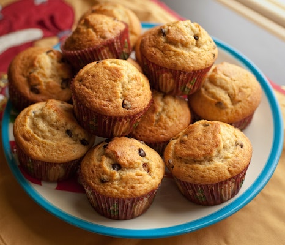

Muffins

Description
Hier ein super Muffin Grundrezept für ein schnelles Dessert, dass jedem gelingt und richtig flaumig schmeckt.
Ingredients
- 80g Butter
- 1 Pkg Vanillezucker
- 0,5 Pkg Backpulver
- 3 Eier
- 200g Mehl
- 140g Staubzucker
- 100ml Milch
Steps
- Für diese flaumigen Muffins zuerst in einer Schüssel die Eier schaumig schlagen. Den Staubzucker mit dem Vanillezucker einrieseln lassen. Die in Flocken geschnittene Butter hinzufügen. Schön schaumig schlagen.
- Danach die Milch mit dem Mehl und dem Backpulver, abwechselnd einrühren.
- Ein Muffinblech mit Papiermuffinförmchen ausfüllen und die Masse in die Förmchen füllen. Die Förmchen dürfen nur bis zur Hälfte oder etwas darüber mit der Masse gefüllt werden. Wenn man keine Papierförmchen hat kann man diese auch weglassen und das Muffinblech etwas mit Butter einfetten.
- Die Muffins bei ca. 180 Grad im vorgeheizten Backofen bei Ober- und Unterhitze ca. 30 bis 40 Min. (mittlere Schiene) backen. Danach die Muffins aus dem Backofen nehmen und abkühlen lassen.